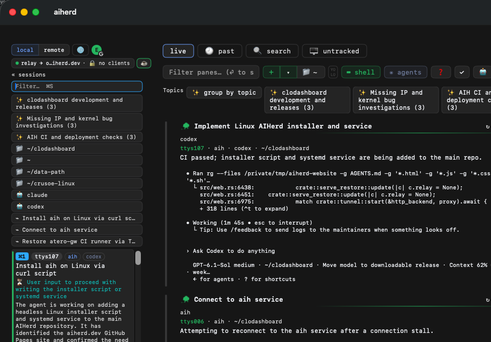
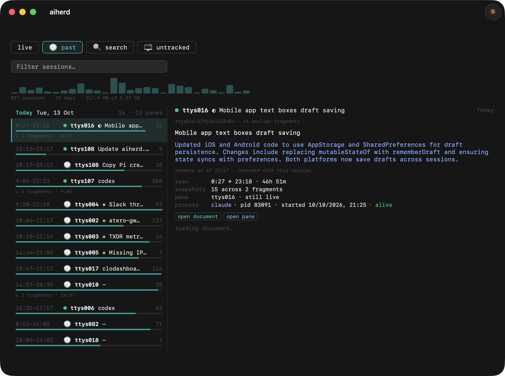
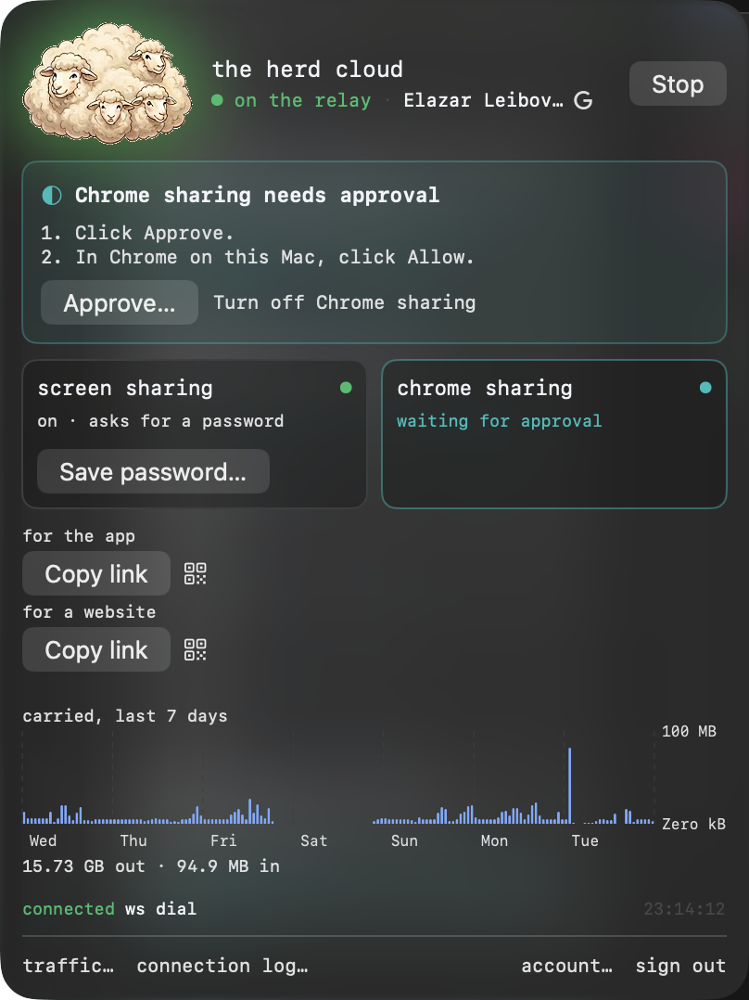

Watch every coding agent in one dashboard
You have six coding agents running in six panes. Five are working and one is blocked on a yes/no question. AIHerd tells you which — 100% local, and it follows Ghostty, iTerm2, Terminal, tmux and cmux.
brew install --cask aiherd-dev/aiherd/aiherdmacOS 14 (Sonoma) or newer · Apple Silicon or Intel
Install on a headless Linux machine over SSH. The herd runs in the background with systemd, including after logout and reboot.
1. Install and start the service
curl -fsSL https://aiherd.dev/install.sh | bashx86_64 / ARM64 · systemd · fully static Linux binaries. Models download on first run. May ask for sudo to keep the service running after logout.
2. Sign in to expose your herd
export PATH="$HOME/.local/bin:$PATH"
aih loginOpen the printed sign-in URL on your phone or another computer.
3. Add your mobile device
aih joinScan the QR code or open the link, then approve pairing in the terminal.
Check the service: systemctl --user status aih.service.
Logs: journalctl --user -u aih.service -f.




Join the mobile beta
The iPhone and Android apps are in testing. Leave a phone number and an email and we'll send you an invite.
You're on the list — we'll be in touch when the next build goes out.